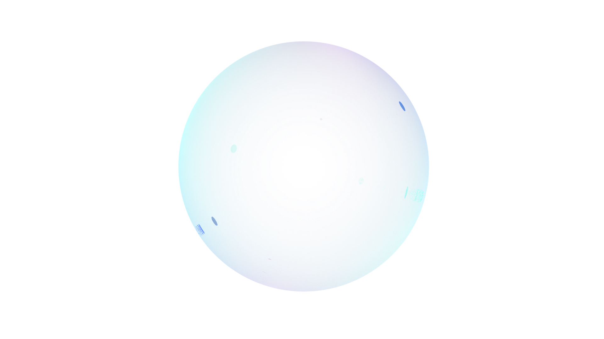
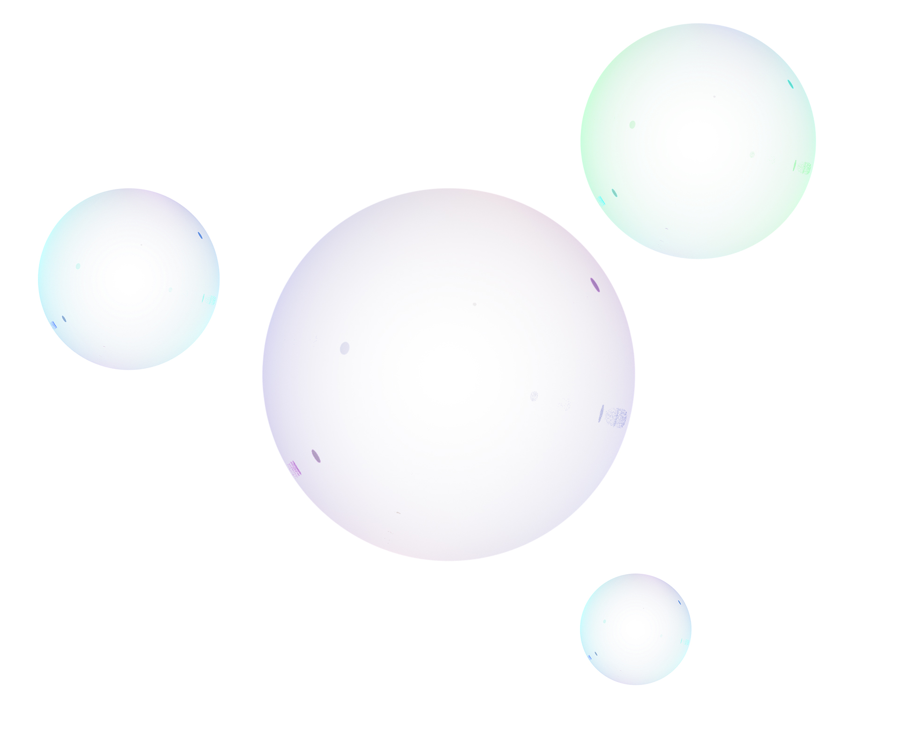

Design
typography
Sweet sans pro is the primary font. This stationer’s font works well with the minimal use of font on the pages themselves.
Heading Level 2
Heading Level 3
Heading Level 4
Heading Level 5
Heading Level 6
Logo
Bubble base design
 relevant design links
Reddit enhancement suiteBubble takes Reddit enhancement suite's website links and untilises the functionality behind a simple title and simple link.
Filter bubblerelated topic on algorithms and filter bubbles
Bubble designDesign inspiration for base bubble that I have designed in 3D (Blender).